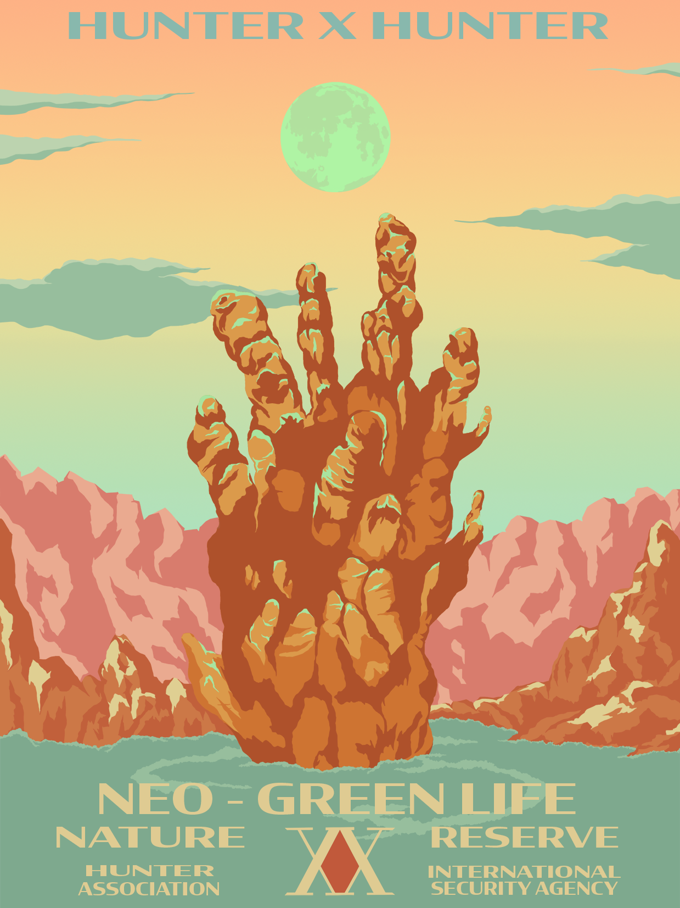

National Parks of Fictional Worlds
From 1935 to 1943, the Works Progress Administration(WPA) created a series of serigraphed posters about the US National Parks. Adopting the iconic screen printed style (with some liberties), I began a series of digital paintings that envision notable fictional landscapes as WPA national park posters. More to come soon!
